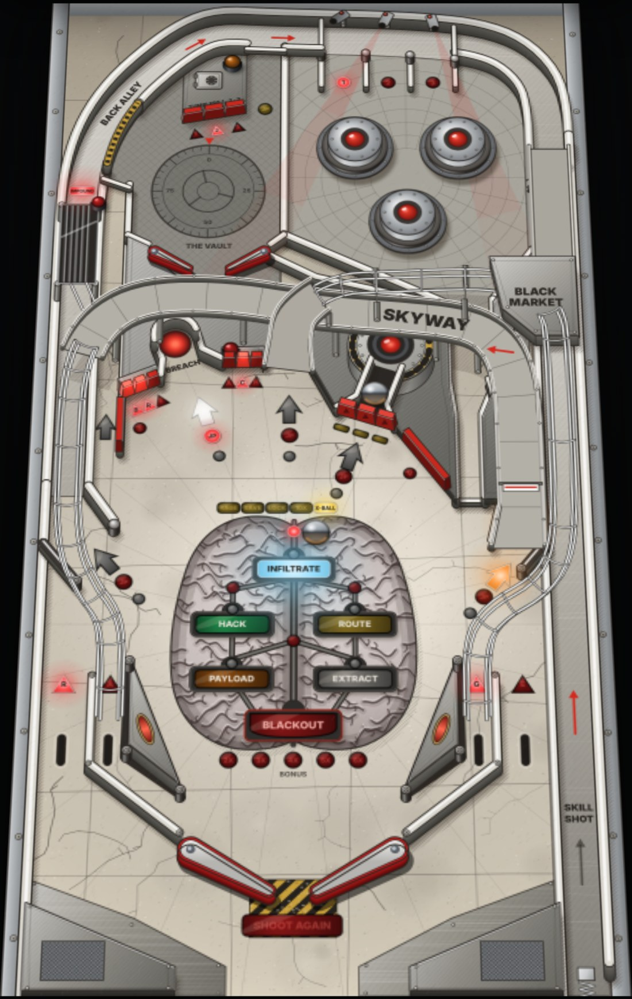
| 1 Welcome to Sector 9 | The heist, the table and your first game | 3 |
| 2 The playfield | Every shot, target and toy, numbered | 4 |
| 3 The shots | The major shots and where they send the ball | 5 |
| 4 Features | B-R-E-A-C-H, cameras, R-A-G-E, the Reactor, the Vault and more | 6 |
| 5 The heist | The map, its keys and the five jobs | 9 |
| 6 Multiball and Blackout | Impound, Vault, Payload and the wizard mode | 12 |
| 7 The Black Market | Cash and what it buys | 13 |
| 8 Scoring | What everything is worth | 14 |
| 9 The display | Reading the dot-matrix display | 15 |
| 10 Strategy | Measured shot odds, flow and the danger zones | 16 |
| 11 Apron cards | The instruction card and the score card | 17 |
| 12 Operator's section | Settings, switches, lamps and diagnostics | 18 |
| Balls per game | 3 |
| Ball save at the start of each ball | 12 s |
| Jobs (no clock) | 5 |
| Timed modes | RAGE, 20 s |
| Multiballs | 4 |
| Most balls in play | 4 |
| Wizard mode | Blackout |
| Flippers | 2 + 2 upper |
| Pop bumpers | 3 |
| Ramps | 2 |
| Display | 128 × 32 dots |
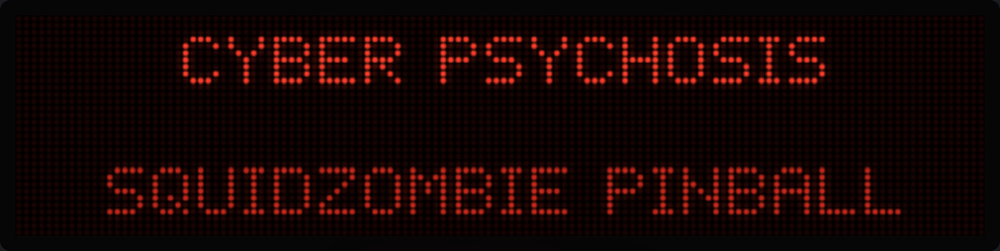
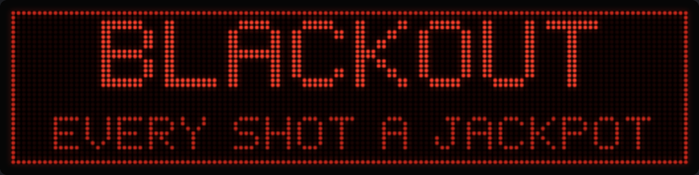
Sections 1 to 3 get you playing. Section 4 explains every feature and section 5 the heist, the table's main story. The measured shot odds in section 10 come from the game's own physics: thousands of simulated flips off each flipper, with the share of flip timings that make each shot. Section 11 has the two cards that sit on the apron of a real cabinet. Operators and the curious will find the switch and lamp lists in section 12.
Under a brutalist concrete tower sits a corporate vault, a security net of cameras, and a reactor that keeps the lights on. Your crew has one night. Break in, work through the heist one job at a time, and finish by overloading the reactor for a total Blackout.
Cyber Psychosis is a widebody-style table drawn in ink on cracked concrete: heavy riveted steel, hazard stripes, and red glass lights. It plays in a phone's browser, tilted away from you like a real cabinet, with the dot-matrix display above the playfield.
The playfield has two main flippers, a small upper playfield (The Vault) with its own pair of flippers, two ramps, an orbit, a scoop, a captive-ball reactor, three pop bumpers and a three-ball lock.
| Action | Touch | Keyboard |
|---|---|---|
| Left flippers | Left half of the screen | Z, ←, left Shift |
| Right flippers | Right half of the screen | /, →, right Shift |
| Plunger | Hold the right half, release | Hold Space, ↓ or Enter, release |
| Start | Tap | Enter |
| Nudge | Shake the phone | X |
| Sound | Speaker button | M |
| Pause | — | P |
| Game speed | % button | — |
| Flat or tilted view | Add ?flat to the address | V |
Each flipper button works both flippers on its side: the main flipper and the upper flipper in the Vault.
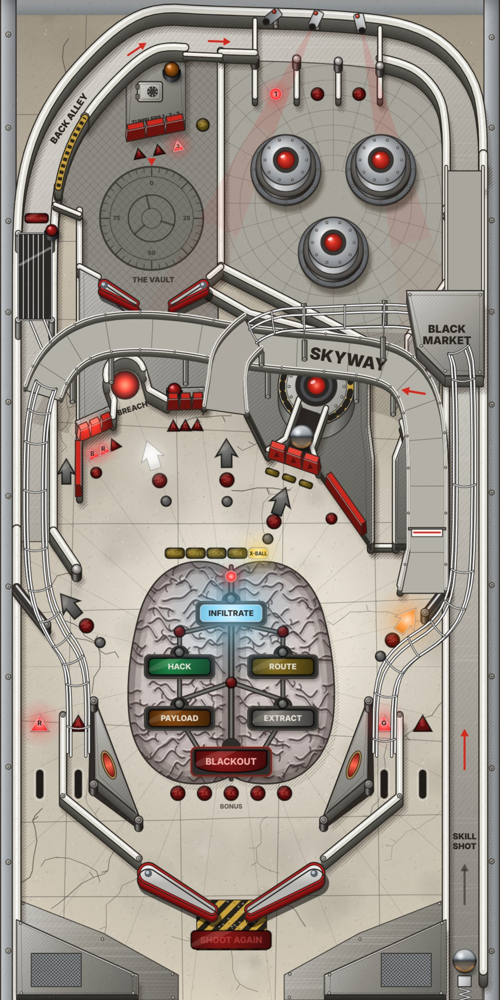
1 2 3 4 5 6 7 8 9 10 11 11 12 13 14 15 16 17 18 19 20 21 22 22 23 23 24 25 26Five major shots drive the game, plus the vault lane. Every major shot pays its value, $5K cash and a twentieth of its value to the bonus, and feeds whatever job, multiball or RAGE is running.
| Shot | From | Value | Comes back to | What it does |
|---|---|---|---|---|
| Skyway | Left flipper | 75K | Left inlane | Up the lane past the spinner, over the top and down the wire. Feeds the Impound when the lock is lit. |
| Black Market | Either flipper | 100K | Right inlane | Buys the item on the menu if you have the cash. The skill shot. |
| Back Alley | Right flipper | 75K | CAM lanes, pops, right inlane | Round the orbit and over the top. With the back door open, into the Vault instead (still counts as the Back Alley). |
| The Breach | Right flipper | 25K | Left flipper | Starts jobs. Collects a lit Breach jackpot or extra ball. |
| Reactor core | Left flipper, drops down | 100K + 50K × heat | Back to the flippers | The captive ball hits the core. Raises the heat, pays supers and starts Blackout. |
| Vault lane | Right flipper | 50K | The Vault | The narrow lane into the upper playfield. The hardest shot on the table. |
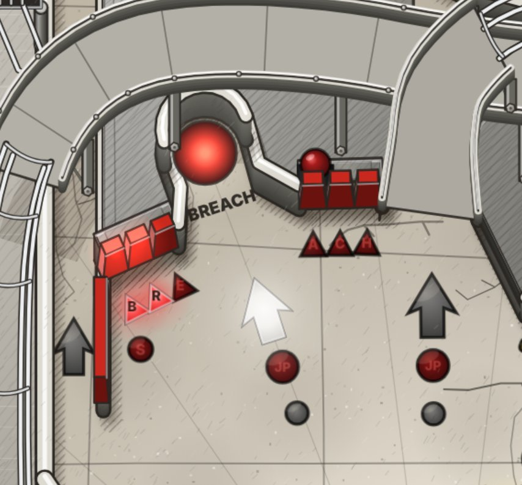
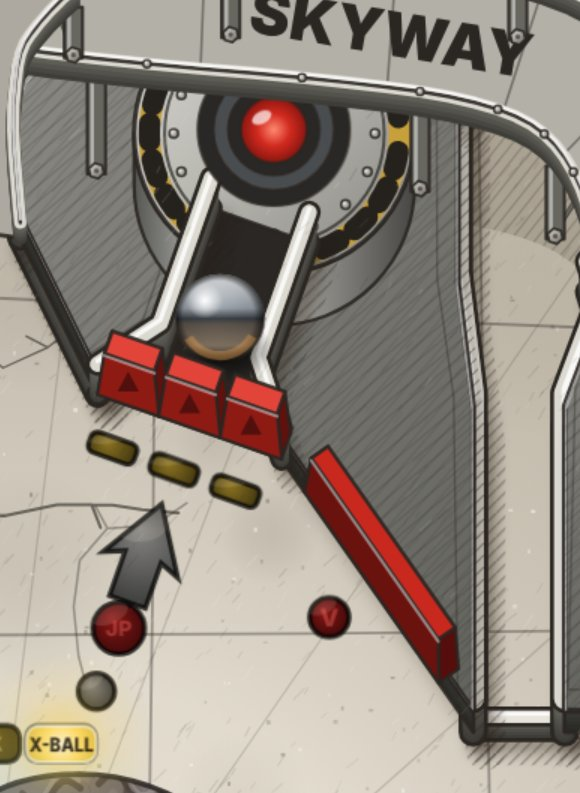
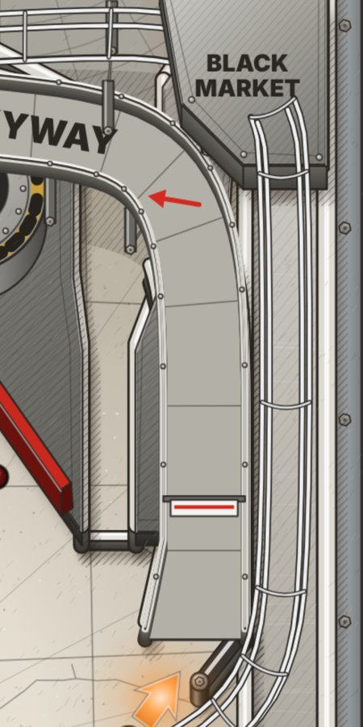
Make a major shot within 3.5 seconds of the last one for a combo. A 2-way combo pays 50K, a 3-way 100K, a 4-way 150K, and so on: 50K for every shot in the chain after the first two.
The ramps bring the ball back to an inlane, so you can catch it and go again. The pops and the Back Alley drop it into the right inlane. The Breach kicks it out to the left flipper, and the plunger always sends it into the CAM lanes.
Six red standups in two banks of three, either side of the Breach. A new letter pays 25K, and a letter that's already lit 5K. The two posts at the Breach's mouth count as E and A. Lit letters stay lit from ball to ball, and reset at the start of each game.
The scoop holds the ball for a moment and kicks it out to the left flipper. When it starts a job it holds the ball while the display explains the job. When two jobs are lit, it holds the ball for 4 seconds while the flipper buttons choose between them, and starts whichever is showing.
Three security cameras pan over the three CAM lanes at the top. Roll through a lane to light it (25K, or 5K if it's already lit) and knock out the camera above it. Every plunge and every Back Alley shot drops into the CAM lanes.
A gate in the Back Alley's wall. While it's open, a Back Alley shot goes through it into the Vault. It still counts as the Back Alley shot, and the door shuts behind the ball. It stays open for the whole of vault multiball.
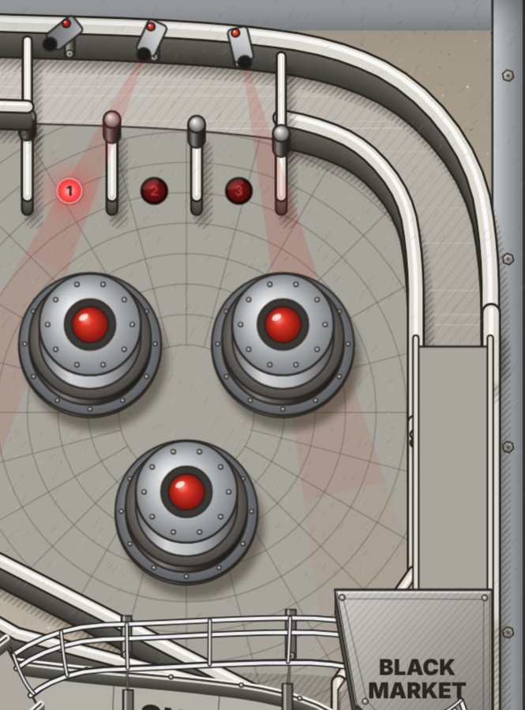
The four lanes at the bottom spell R-A-G-E: R the left outlane, A the left inlane, G the right inlane, E the right outlane. Each lane pays 5K, and lighting a letter 20K more. The flipper buttons shift the lit letters.
All four lit raises the bonus multiplier one step (up to 6X; it carries over between balls) and starts RAGE, or adds 10 seconds to it.
Finish R-A-G-E on an outlane and that ball is saved when it drains: BALL SAVED · RAGE SAVED IT. Finishing on an inlane doesn't save anything, because that ball isn't draining.
A 20-second frenzy that runs alongside anything else. Every switch pays 100K (pop bumpers 150K) and every major shot 250K. The spinner doesn't count. The clock waits while a ball is held, and at zero RAGE keeps scoring for a 2-second grace period. It ends when the ball drains. After a Blackout its values go up with the heist.
| Switch | Score | Cash |
|---|---|---|
| Pop bumper | 5,000 | $2K |
| Slingshot | 1,010 | $1K |
| Spinner, a turn | 2,500 | $500 |
| SAFE or VENT | 25,000 | $11K |
| CAM lane, R-A-G-E lane | 5K–25K | $1K |
A Skyway shot spins the spinner 8 to 15 times. The pops send the ball out of their nest to the right inlane.
Drop targets: 25K each. Knock all three down for 100K: the core is exposed and the lock lights at the Skyway, if a lock is possible. Drop 3 hides behind drop 2, so take drop 2 first.
Once Hack or Route is finished, knocking all three down also lights Payload or Extract at the Breach.
The core: with the drops down, shoot the captive ball into the core. Each hit raises the reactor heat for the rest of the game and pays 100K plus 50K for each level of heat (150K for the first hit). The drops come back up a moment later, unless a super jackpot wants them down.
The core is also where every super jackpot is collected, and where Blackout starts.
The upper playfield at the top left, with its own pair of flippers on the main buttons and three tumbler targets. Get in up the vault lane or through the open back door (50K). Leave out the top into the CAM lanes (100K) or down the side to the right flipper.
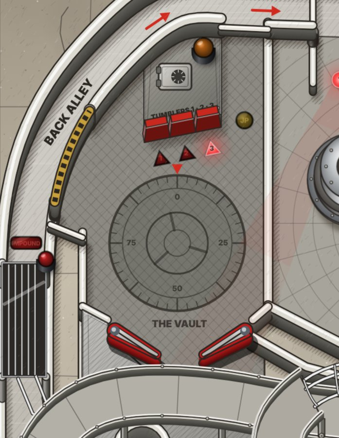
A three-ball lock in a cage over the orbit. With the lock lit (by the Reactor's drops, or bought at the Black Market), a Skyway shot is diverted up a wire into the cage. It still scores as a Skyway shot, and if it was your only ball, a new one is served to the plunger. Lock three for Impound multiball. Locked balls stay locked from ball to ball, but Payload and Blackout use them first, which empties the lock.
Plunge, and make the Black Market ramp within 7 seconds: 500K and $50K. The Black Market's arrow strobes while it's live. Every ball served to the plunger gets one, including the ball served after a lock.
12 seconds from the plunge of each new ball, shown by the blinking SHOOT AGAIN light. Multiballs give 12 seconds (Blackout 20), and the Black Market sells 15. The ball save waits while a ball is held in the Breach or rolling into the Impound.
Everything adds to the end-of-ball bonus:
At the end of the ball the bonus is multiplied by the bonus multiplier (1X to 6X, raised by R-A-G-E) and added to your score. The multiplier carries over between balls.
Two a game at most: one lit at the Breach by the third B-R-E-A-C-H, and one bought at the Black Market. The SHOOT AGAIN light stays on while one is waiting. You play the same ball number again.
Nudging moves the ball but fills a tilt meter, which drains over a few seconds. The third quick nudge shows DANGER. The fifth tilts: the flippers die and the ball is lost with its bonus. A tilted ball scores nothing and starts nothing, and a job in progress ends unfinished, so its row lights again.
The heist is the table's story: five jobs in three rows, drawn on the map in the brain at the centre of the playfield, ending in Blackout. Each row has a key that lights its jobs at the Breach. A row opens once you've finished a job in the row above.
A job carries on with your next ball (HACK CONTINUES, for example), but the step you were in the middle of starts over: Hack's current code, Route's current lap, Extract's current leg. Infiltrate keeps the shots you've snuck past.
Multiballs don't carry over. If Payload's multiball ends before its super jackpot, the job fails and its row lights again. A tilt ends any job the same way.
A finished job shows its title and bonus, then its total, and adds a twentieth of the total to your bonus. Finishing a row-3 job lights Blackout at the Reactor. After Blackout the heist starts over, with Infiltrate lit and every job worth 0.5X more.
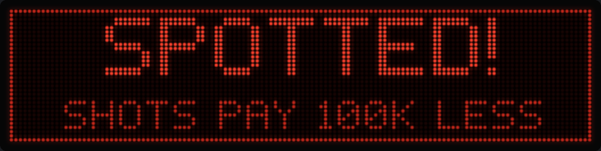
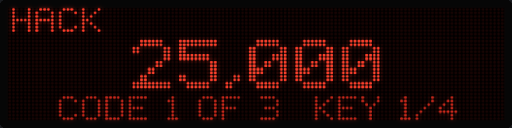
While a job runs, the display shows its name at the top left, your score in the middle, and the job's status on the bottom line (CODE 2 OF 3 KEY 1/4, NEXT SKYWAY, SNEAK PAST 2 MORE). The bottom line takes turns with RAGE, the job's pace and any other multiball every 2 seconds.
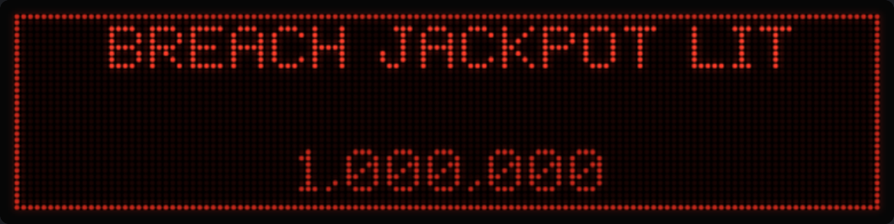
Once Blackout is lit, any core hit with no job running starts it. The key to the last row is knocking the Reactor's drops down, which also exposes the core. To finish all five jobs first, knock the drops down and get to the Breach without touching the captive ball.
| Multiball | Started by | Balls | Jackpots | Super jackpot |
|---|---|---|---|---|
| Impound | Locking three balls | 3 | Skyway, Black Market, Back Alley, Breach: 1M, +250K each | Four jackpots light it at the Reactor for 20 s: 3× the jackpot |
| Vault | Cracking the vault | up to 4 | Every ball out the Vault's top: 1M, +250K each | — |
| Payload | The Payload job | 2 | Both ramps: 1.5M, +250K each | Three jackpots light it for 20 s: 3× the jackpot |
| Blackout | The core, once lit | 3 or 4 | Skyway, Black Market, Back Alley, Breach, once each: 2M, +500K each | All four light it: 5× the jackpot |
The cage lets the balls out one by one, down the Skyway's wire to the left flipper, with a 12-second ball save. Any of the four shots is a jackpot, as often as you make it. The jackpot's value carries on into your next Impound multiball. Four jackpots light the super at the Reactor and drop the targets out of the way. Miss the super and two more jackpots relight it. When the multiball ends, the display shows what it paid.
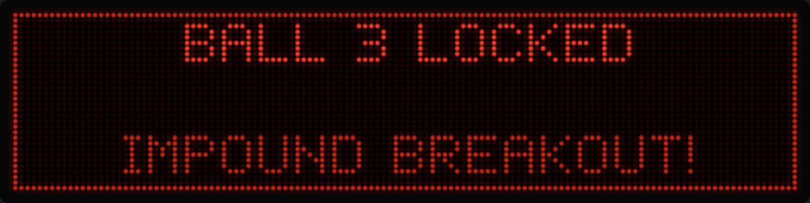
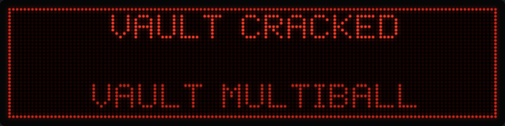
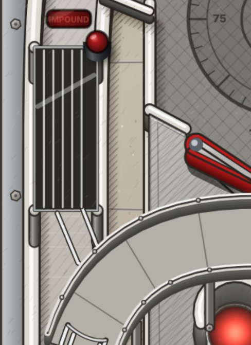
Crack the vault's combination and the hatch opens: up to three balls drop onto the Vault's deck, for four on the table at most. 12-second ball save. The back door stays open for the whole multiball, so every Back Alley shot feeds the Vault. Each ball you send out the Vault's top pays the vault jackpot, which starts at 1M each time.
Every multiball starts with a ball save (Blackout 20 seconds, the others 12). A drained ball is fired straight back in while it runs.
A multiball ends when one ball is left. Payload ends its job with it, and Blackout its pass through the heist.
Everything you hit earns cash. Spend it at the Black Market: the box at the top of the centre ramp. Cash lasts the whole game; the display shows it on the bottom right when nothing else is lit.
| Source | Cash |
|---|---|
| Any switch | $1K |
| Pop bumper | $2K |
| Spinner, a turn | $500 |
| Major shot | $5K |
| SAFE or VENT | $11K |
| CAMERAS DOWN | $25K |
| Skill shot | $50K |
The menu under the Black Market's five lights rotates every 4 seconds through the items you can buy right now. The item on offer blinks, and blinks faster when you can afford it. Make the Black Market ramp to buy it. If you can't afford it, the display shows its price.
| Item | Price | What it does |
|---|---|---|
| RAGE | $60K | Starts RAGE, or adds 10 seconds to it. Doesn't raise the bonus multiplier. |
| Save | $50K | A 15-second ball save. Offered while no ball save is running. |
| Lock | $40K | Lights the lock. Offered when a lock is possible. |
| X-Ball | $200K | An extra ball. Once a game. |
| 10X | — | On the menu, but not sold in this version. |
| Slingshot | 1,010 |
| Spinner, a turn | 2,500 |
| Pop bumper | 5,000 |
| B-R-E-A-C-H letter: new / already lit | 25K / 5K |
| R-A-G-E lane: lighting a letter / other | 25K / 5K |
| CAM lane: lighting / other | 25K / 5K |
| SAFE, VENT | 25K |
| Drop target / all three | 25K / +100K |
| CAMERAS DOWN | 100K |
| Tumbler 1st / 2nd / crack | 50K / 100K / 1M |
| Wrong tumbler | 10K |
| Breach | 25K |
| Skyway, Back Alley | 75K |
| Black Market | 100K |
| Reactor core | 100K + 50K × heat |
| Into the Vault / out the top | 50K / 100K |
| Combo, n-way | (n − 1) × 50K |
| Skill shot | 500K |
| Breach jackpot | 1M, +250K each |
| Infiltrate shots / finish | 0.5–0.95M / 3M |
| Hack keys / codes / finish | 250K / 1.5–4.5M / 3M |
| Route steps / lap / finish | 0.6–2.9M / 2.5M / 3M |
| Payload jackpot / super | 1.5M +250K / 3× |
| Extract legs / finish | 6M, 7M, 8M draining / 4M |
| Impound jackpot / super | 1M +250K / 3× |
| Vault jackpot | 1M +250K |
| Blackout jackpot / super | 2M +500K / 5× |
| RAGE: switch / pop / shot | 100K / 150K / 250K |
A first game is worth 1 to 3 million. Play a couple of jobs and a multiball and you'll reach 10 to 20 million. A Blackout game goes past 50 million.
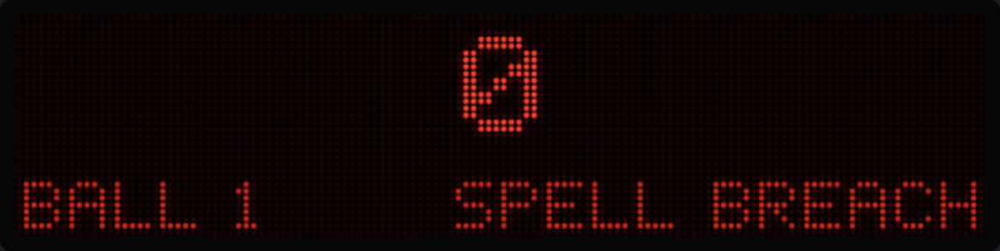
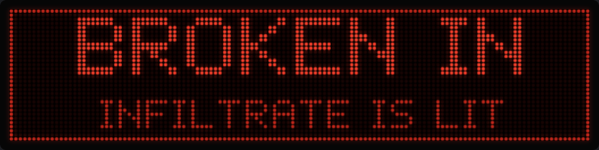
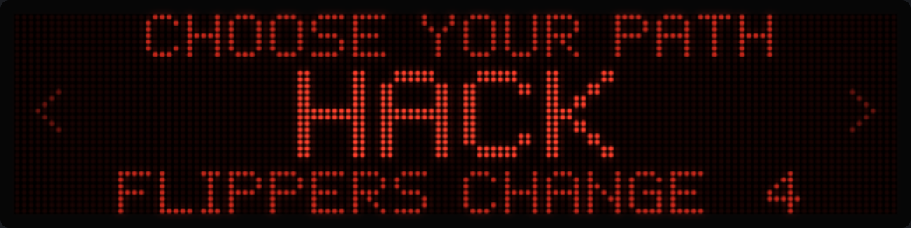
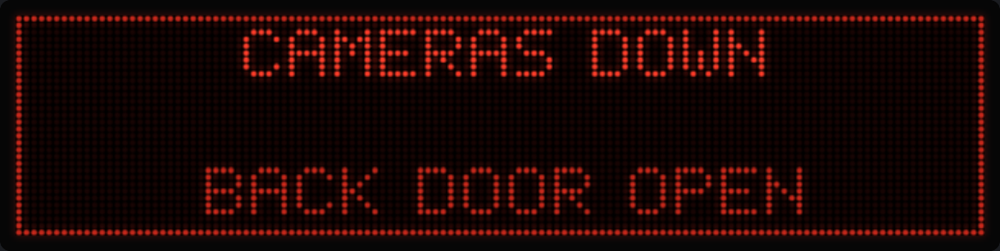
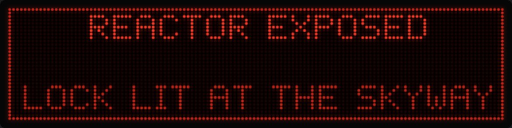
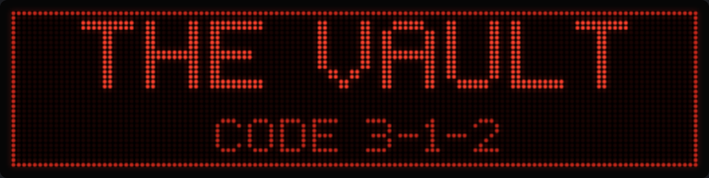
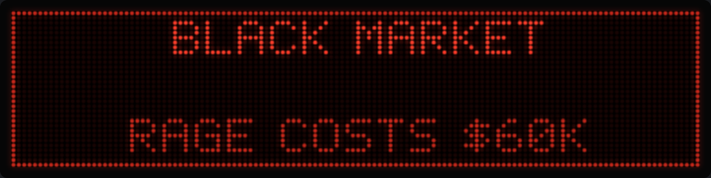
In normal play the bottom right shows the most important thing that's lit, in this order:
| VAULT 1.25M · JP 1.5M · SUPER 12 | A multiball's jackpot, or the seconds left on its super |
| BLACKOUT LIT | Hit the core |
| CODE 3-1-2 | A ball is in the Vault: the combination |
| EXTRA BALL LIT | Collect it at the Breach |
| BREACH LIT | A job is ready to start |
| BREACH JP 1M | A Breach jackpot is waiting |
| LOCK LIT | Shoot the Skyway to lock a ball |
| SAVE | The ball save is running |
| SPELL BREACH | You haven't broken in yet |
| $45K | Your cash |
While a ball waits in the shooter lane the bottom line blinks LAUNCH instead.
These odds are measured, not guessed. The game's physics was run off each flipper at every flip timing 2 ms apart, from a cradled ball and from a ball rolling straight off the inlane. Each figure is the share of those timings that makes the shot. A bigger number means a wider timing window.
| Shot | Cradled | On the move |
|---|---|---|
| Skyway | 19% | 2% |
| Black Market | 9% | 16% |
| Reactor core (drops down) | 10% | 10% |
| Drop 1 / drop 2 | 13% / 12% | 11% / 12% |
| Drop 3 (once 2 is down) | 11% | |
| VENT | 13% | 5% |
| Letters H / C / A | 0% | 5% / 10% / 10% |
| The Breach | 0% | 3% |
| Shot | Cradled | On the move |
|---|---|---|
| Black Market | 12% | 4% |
| Back Alley | 10% | 4% |
| The Breach | 9% | 13% |
| Vault lane | 1% | 0% |
| Letters H / A | 15% / 9% | 11% / 11% |
| Letter B | 6% | 0% |
| SAFE | 7% | 2% |
The Skyway can't be made from the right flipper, and the Back Alley can't be made from the left. The Breach is a right-flipper shot; the left flipper only finds it on the move, rarely.
The Breach starts every job. It's a right-flipper shot: 9% of cradled timings make it, and 13% of balls rolling off the right inlane. The Black Market ramp returns to the right inlane, so Black Market, then the Breach on the fly is the natural way in.
From a cradle on the right flipper, H (15%), A (9%) and B (6%) are the aimable letters. C is a left-flipper shot on the move (10%): make the Skyway, then flip at C as the ball comes off the left inlane. R and E mostly come from rebounds. Letters you've lit stay lit for the whole game, so keep chipping away.
In simulated play the right outlane drains about three balls for every one down the left. The worst feeders are the Reactor's drop targets: a drop hit from the left flipper rebounds into the right outlane a quarter to a third of the time. The left slingshot and SAFE send the ball that way too. Shoot the drops from a cradle, aim for the middle of the bank, and be ready to nudge.
The vault lane is the hardest shot on the table. The easy way in is the back door: light all three CAM lanes, then make the Back Alley within 20 seconds. Inside, the upper left flipper reaches tumblers 1 and 3, and the upper right flipper reaches tumbler 2. The upper right flipper also sends most balls out of the Vault's side drain, so only use it when the code asks for tumbler 2.
The two cards that sit either side of the flippers on a cabinet's apron: how to play on the left, scores on the right. Cut along the dashed lines.
Jobs have no clock, and carry on if you lose the ball.
3 balls · ball save 12 s · Squidzombie Pinball
| Breach jackpot | 1M +250K |
| Impound | 1M +250K |
| Vault | 1M +250K |
| Payload | 1.5M +250K |
| Blackout | 2M +500K |
| Supers | 3× · Blackout 5× |
| Infiltrate · Hack · Route | 3M |
| Extract | 4M |
| Each Blackout | +0.5X |
| 1 ______________ | ______________ |
| 2 ______________ | ______________ |
| 3 ______________ | ______________ |
| 4 ______________ | ______________ |
Sector 9 · one heist · no ghosts
| Setting | How | Kept |
|---|---|---|
| Game speed: 100%, 90% or 80% | The % button | On this device |
| Flat or tilted view | V, or ?flat in the address | No |
| Sound on or off | Speaker button, or M | No |
| Pause | P | — |
| High score | Set by play | On this device |
A slower game speed slows the whole game, ball and timers alike, which helps on a small screen.
| Balls per game | 3 |
| Ball save, from the plunge of each new ball | 12 s |
| Tilt warning (DANGER) | 3rd quick nudge |
| Tilt | 5th quick nudge |
| Tilt meter recovery | 1 nudge per 2.5 s |
| Nudge repeat | one per 0.6 s |
| Balls in play, most | 4 |
| Playfield | 600 × 1200 units; 1 unit is about 1 mm |
| Ball | 28 units across |
| Physics | 480 steps a second, fixed; ramps on their own collision layers; flippers pass their real surface speed to the ball |
| Picture | 3/4 view with real height, tilted in 3D; lamps, flashers and general illumination drawn live |
| Display | 128 × 32 dot matrix |
| Flashing | No large area of the screen flashes more than three times a second |
| Art and sound | All generated in code; no image or sound files |
| Switch | Where |
|---|---|
| Flipper buttons | Left and right; each works both flippers on its side |
| Plunger | Shooter lane |
| Tilt | Nudge |
| Slingshots | Left, right |
| Pop bumpers 1–3 | Top right nest |
| CAM lanes 1–3 | Top lanes, above the pops |
| R-A-G-E lanes | R left outlane, A left inlane, G right inlane, E right outlane |
| B-R-E-A-C-H | Six standups. The posts at the Breach's mouth also count as E and A |
| SAFE | Orbit's inner wall |
| VENT | Reactor's right flank |
| Drop targets 1–3 | Across the Reactor's mouth |
| Reactor core | Captive ball hits the core |
| Breach scoop | Holds and ejects the ball |
| Skyway made | Top of the Skyway |
| Spinner | Skyway lane |
| Black Market made | Top of the centre ramp |
| Back Alley | Top of the left orbit |
| Vault entry | Top of the vault lane, and the back door |
| Tumblers 1–3 | In the Vault |
| Vault exits | Out the top, or down the side drain |
| Impound lock | The cage, fed from the Skyway |
| Drain | Below the flippers |
Breach kicker · back door · Back Alley loop diverter · Skyway lock diverter · Impound release · Vault hatch · drop target reset · auto-launcher for multiball and saved balls.
| Lamps | Count | Meaning |
|---|---|---|
| Shot arrows | 5 | Skyway, Black Market, Back Alley, Breach, Reactor: something to collect there. Slow blink: available. Fast: a jackpot or a hurry. Strobe: a super, or the watched shot in Infiltrate |
| Shot jackpots (JP) | 5 | A jackpot is lit at that shot |
| Shot mode lights | 5 | The running job wants this shot, in the job's colour |
| Lock | 2 | LOCK at the Skyway; IMPOUND on the cage |
| SAFE, VENT | 2 | Flash when hit |
| B-R-E-A-C-H | 6 | On: spelled. Flashing: Hack's key to hit |
| CAM 1–3 | 3 | On: camera knocked out. Blinking: CAMERAS DOWN |
| Tumblers 1–3 | 3 | Blinking: the next tumbler in the code |
| Vault jackpot, vault arrow | 2 | JP: vault multiball's jackpot. Arrow: lit while the back door is open |
| Drop targets | 3 | On: that drop is down |
| Black Market menu | 5 | RAGE, SAVE, LOCK, 10X, X-BALL. Blinking: on offer. Faster: you can afford it |
| Heist map | 15 | Six plaques with five domes: lit when a job is ready, fast while it runs, steady once done. Four junction lights: how far into the heist you are; all blink while Blackout is lit |
| Bonus 2X–6X | 5 | The bonus multiplier |
| R-A-G-E | 4 | Letters lit; in RAGE the unlit ones blink |
| Shoot Again | 1 | Slow: ball save. Fast: save ending. On: extra ball |
Impound cage beacon · Black Market · A-C-H bank · Reactor eye · Vault tumbler block.
The game ships with its own test suite. From the source folder:
| Command | What it checks |
|---|---|
| npm test | Every rule: the heist, its keys, each job, the multiballs, the Black Market, RAGE and its clock, ball flow, flash safety |
| npm run sim | A bot plays for ten minutes; checks that no ball escapes, sticks or passes through a wall |
| npm run measure | Shot windows, ramp returns, the Back Alley, the plunge, the pops, the Breach, the Vault and every clearance. Name one section, for example npm run measure windows |
| npm run template | Redraws the art templates from the physics |
| npm run build | Builds the game for the web |
Every gap the ball must pass is measured against the ball. The tightest are the pop bumper exit lane and gate (1.07 balls) and the vault lane (1.12 balls). The Breach's mouth is 2.21 balls wide, its right lip flared for the right flipper's cradled shots, and the Black Market's 1.89.
This manual describes version 20 of Cyber Psychosis, October 2026: the heist map with its three keys, B-R-E-A-C-H rewards, untimed jobs that survive a drain, the Vault's random combination, the brain under the heist map, and the fixes and flared Breach from the October audit.
Break in. Hack the keypad. Plot the route. Load the payload. Make the getaway. Then overload the reactor and black out the grid.